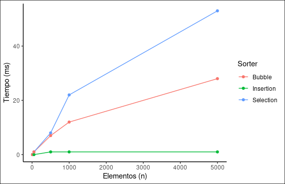
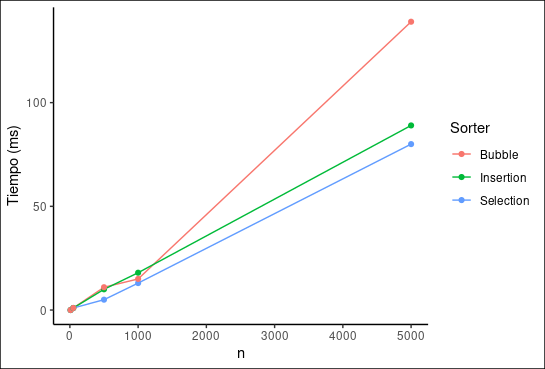
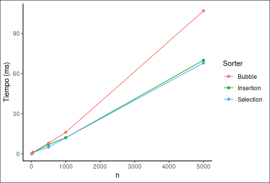

Análisis y Diseño de Algoritmos
Sorting
Hay dos propiedades que vamos a considerar en estos algoritmos: estabilidad y adaptatividad.
Un algoritmo de sorting es estable si dos elementos iguales aparecen en el mismo orden en la salida ordenada tal como aparecen en la lista de entrada antes de que se va a ordenar, siendo no estable o inestable si este orden se modifica.
Un algoritmo de sorting es adaptativo si modifica su conducta (las operaciones que realiza) durante su ejecución, dependiendo del resultado de las comparaciones que hace. Mientras que es no adaptativo si la secuencia de operaciones que realiza es independiente del orden de los elementos.
Algoritmos elementales
Los algoritmos elementales de sorting son tres:
- Selection Sort
- Insertion Sort
- Bubble Sort
Los tres algoritmos son de tiempo cuadrático, tanto en el peor caso como en el promedio, y son in-place (no requieren memoria adicional). Aún así el funcionamiento de cada uno es distinto, como se verá a continuación.
Selection Sort
El algoritmo recorre toda la lista para encontrar el elemento más pequeño, una vez que se encuentra se intercambia con el elemento en la primera posición. Luego se recorre la lista desde la segunda posición (ya que el elemento anterior está en su posición final) en búsqueda del segundo elemento más pequeño y una vez encontrado se intercambia con el elemento de la segunda posición. Se continua de este modo hasta que la lista esté ordenada.
Se llama “Selection” porque opera seleccionando repetidamente el elemento restante más pequeño. Es bueno cuando se deben realizar pocos intercambios.
Es inestable, ya que una vez que encuentra al elemento más pequeño de la parte desordenada, lo intercambia con el elemento que está en la posición correspondiente. Es no adaptativo, ya que realiza la misma cantidad de operaciones (y por lo tanto tarda el mismo tiempo) sin importar el orden de la lista inicial.
Ejemplo de inestabilidadInsertion Sort
El algoritmo considera un elemento a la vez, insertándolo en su lugar correspondiente entre aquellos elementos que han sido considerados previamente. Por lo tanto los elementos considerados van a estar ordenados pero no en sus posiciones finales, ya que puede que se tengan que mover al considerar un nuevo elemento.
Es estable, ya que intercambia elementos solo si son mayores, no si son iguales. Es adaptativo, ya que entre más ordenada esté la lista inicial, menor será su tiempo de ejecución.
Bubble Sort
El algoritmo itera sobre la lista, intercambiando elementos adyacentes que no estén en orden, continuando de esta manera hasta que la lista esté ordenada. Por lo tanto por cada iteración la lista se va ordenando cada vez más.
Es estable. ya que como el Insertion Sort, solo intercambia elementos si son mayores que el siguiente, no si son iguales. Es adaptativo, ya que entre más ordenada esté la lista inicial, menor será su tiempo de ejecución.
Análisis de algoritmos elementales
Para este análisis hay tres posibles casos que vamos a considerar:
- Mejor caso: Cuando la lista ya está ordenada, en nuestro caso consideramos una lista ordenada cuando está ordenada de manera ascendente.
- Peor caso: Cuando la lista está invertida, es decir, está ordenada de manera descendente.
- Caso promedio: Cuando los elementos de la lista están ordenados de manera random.
Tiempo de ejecución
Mejor caso

Teoricamente, en el mejor caso tanto Bubble Sort como Insertion Sort deberían tener un tiempo de ejecución lineal, mientras que el de Selection Sort sigue siendo cuadrático.
Ahora bien, empíricamente, podemos ver en la gráfica como Insertion Sort y Bubble Sort se asemejan a una recta, mientras que la curva del Selection Sort asciende con mayor rapidez, como era de esperarse.
Peor caso

Teoricamente, en el peor caso Selection Sort hace siempre la misma cantidad de comparaciones e intercambios, sin importar el orden inicial de la lista, por lo que su tiempo de ejecución sigue siendo cuadrático. Mientras que a diferencia del mejor caso, ahora tanto Insertion Sort como Bubble Sort pasan a tener un tiempo de ejecución cuadrático.
En el gráfico podemos observar como Bubble Sort si parece expresar ese tiempo de ejecución cuadrático, aunque Selection Sort e Insertion Sort no, pareciendo más un tiempo lineal o muy levemente cuadrático.
Caso promedio

Teoricamente, en el caso promedio los tres algoritmos también tienen un tiempo de ejecución cuadrático.
En la gráfica se puede observar como sucede lo mismo que en el peor caso: el Bubble Sort si expresa ese tiempo cuadrático, mientras que Selection Sort e Insertion sort, no tanto. La diferencia es que los tiempos son menores al peor caso.
En el peor caso y en el promedio, el tiempo de los algoritmos de Insertion y Selection es similar, mientras que el tiempo de ejecución de Bubble se eleva mucho más a medida que aumenta n. Esta última observación era de esperarse. Wesley (2002) “Bubble sort generally will be slower than the other two methods…” (p. 262).
Orden
Mejor caso
.
Peor caso
.
Caso promedio
.
En el caso de tener que desarrollar un programa que utilice alguno de los algoritmos elementales para ordenar una lista de objetos del tipo:
public class FullName {
private String firstname;
private String lastname;
public String getFirstname() {
return firstname;
}
public String getLastname() {
return lastname;
}
}En el cual la lista debe ser ordenada dos veces, la primera por apellido y la segunda por nombre.
Yo implementé un FullNameComparator el cual tiene una lógica con la que se puede ordenar una lista de FullNames de esta manera deseada, sorteandola solo una vez. Por lo tanto, elegí utilizar Insertion Sort, ya que su tiempo de ejecución es de los menores entre los tres algoritmos, como podemos ver en las gráficas anteriores.
Shellsort
Una desventaja del algoritmo de Insertion sort es que solo puede intercambiar elementos adyacentes, por lo que los elementos solo pueden moverse una posición a la vez en la lista. Shellsort es una simple extensión de Insertion sort que permite intercambiar elementos no adyacentes, por lo que gana rapidez.
Una lista h-sorted es simplemente \(h\) listas ordenadas intercaladas entre sí. Es decir, empezando en cualquier elemento y agregando el elemento que está \(h\) posiciones por delante, siguiendo así hasta llegar al final de la lista, se tiene una sublista ordenada.
Ejemplo de lista h-sortedLa esencia del algoritmo de Shellsort es h-sortear varias veces la lista, utilizando una secuencia descendente de \(h\) que finalice con \(h = 1\). El empezar con un \(h\) grande permite intercambiar elementos que están lejos en la lista original, disminuyendo el desorden rápidamente y dejando menos trabajo que hacer para los \(h\) más pequeños. Una vez que \(h = 1\), se estaría ejecutando un Insertion sort.
Es inestable, ya que no examina a los elementos que están entre los intervalos, por lo que puede cambiar el orden relativo de elementos iguales.
Ejemplo de inestabilidadEs in-place, ya que no requiere memoria adicional y es adaptativo, ya que se ejecuta más rápidamente si la lista inicial está parcialmente ordenada… (quizas poner un ejemplo).